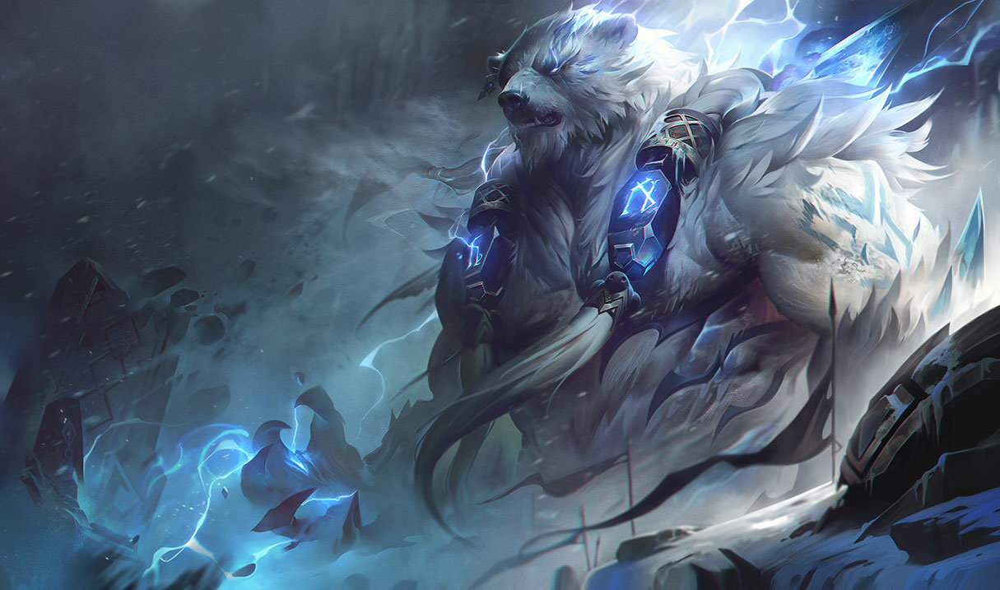

볼리베어:상향이 필요한 뚜벅이 탑솔러
For followers, the Bolivier is still the storm itself.
Powerful, savage and stubbornly determined,
he existed even before the mortal appeared in Freeljord's frozen land.
Bolivier, who greatly cared about the land
he had built with other deities, loathed the development of a weak civilization,
and eventually began to fight to regain the old tradition
that had been rough and violent.
Whoever stands in his way will taste the teeth, claws, and thunder of the Bolivier.